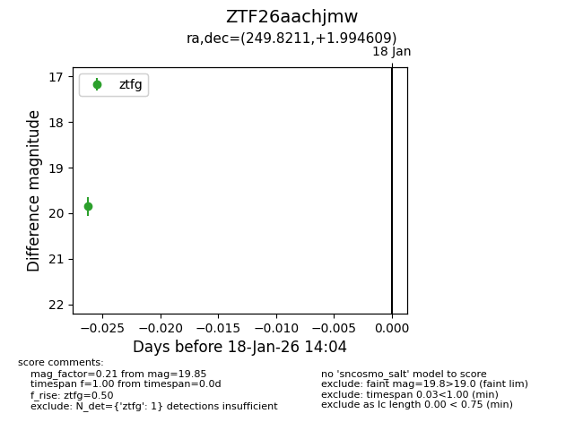
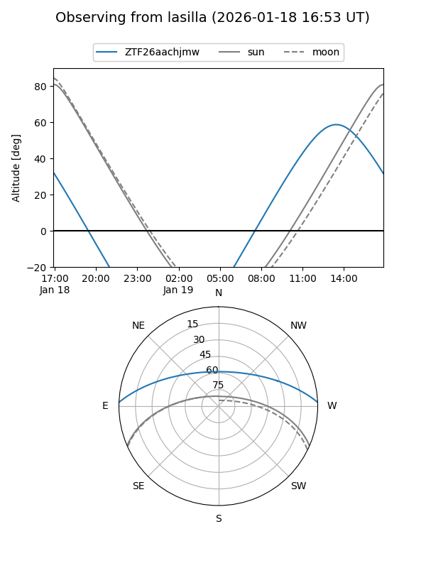
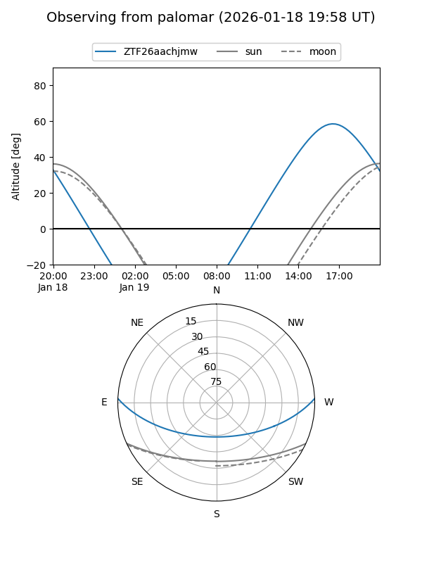
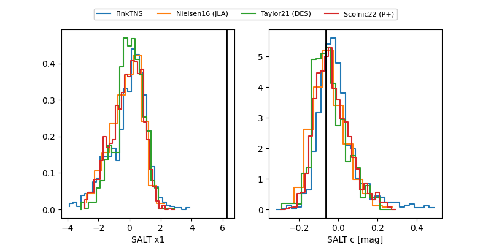

ZTF26aachjmw
Target ZTF26aachjmw at 2026-01-18 14:05
Aliases and brokers:
FINK: link
Lasair: link
ALeRCE: link
alt names
ZTF26aachjmw (ztf,fink_ztf)
Coordinates:
equatorial (ra, dec) = 249.8211,+1.99461
equatorial (HMS+DMS) = 16:39:17.07,+01:59:40.59
galactic (l, b) = (18.3803,+30.05284)
Flags:
Photometry:
last ztfg=19.85
1 ztfg detections
Lightcurve

Visibility


Additional plots
